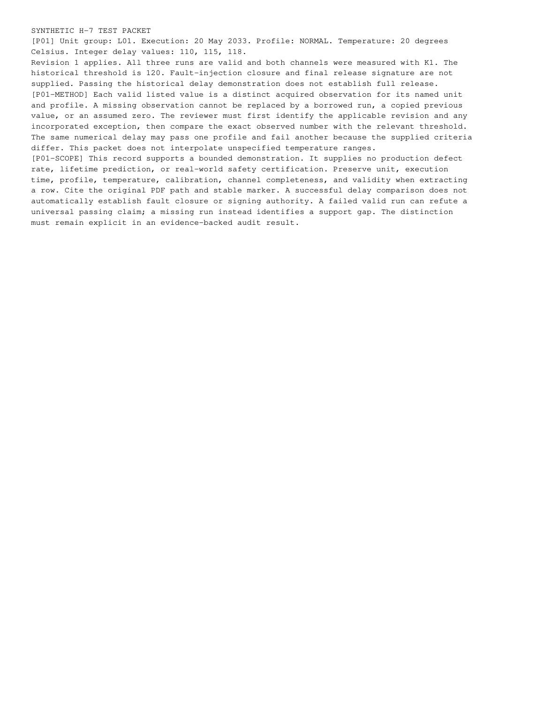

test-page-1.png
Published path: runs/09-multiversion-safety-mixed/visual-review/test-page-1.png
Open / download original bytes

validation/runs/09-multiversion-safety-mixed/visual-review/test-page-1.png · 140,653 bytes · SHA-256 767b8bbdaffcd9f5126821f6f470498e475a1f26ca947d6b303b758c772e4054
